Paper 32spring23 Q5
Differentiation
Self-marked exam work is useful practice evidence, but it is weaker than checked Skill Check evidence. It does not award mastery by itself.
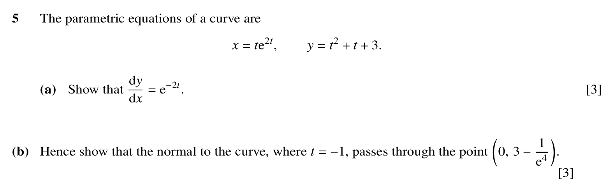
Show mark scheme image
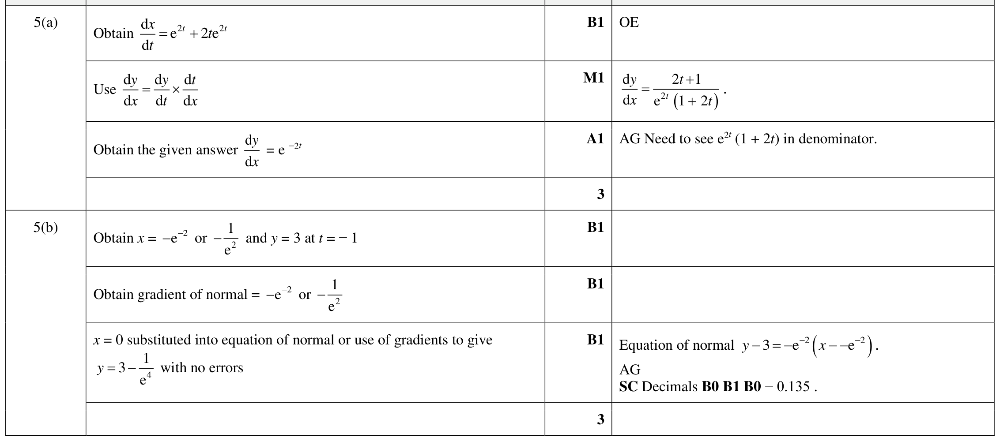
Module 2 of 2: Exam Training
Try one Paper 3 question at a time. Self-mark honestly and use Learn Mode checked evidence for progress.
Self-marked exam work is useful practice evidence, but it is weaker than checked Skill Check evidence. It does not award mastery by itself.
Paper 32spring23 Q5
Self-marked exam work is useful practice evidence, but it is weaker than checked Skill Check evidence. It does not award mastery by itself.


Paper 31summer23 Q5
Self-marked exam work is useful practice evidence, but it is weaker than checked Skill Check evidence. It does not award mastery by itself.
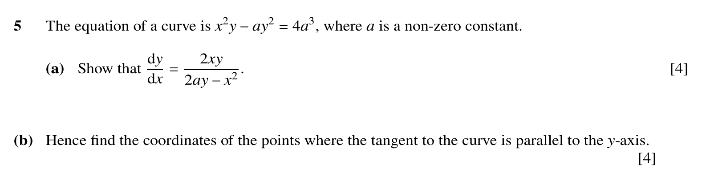
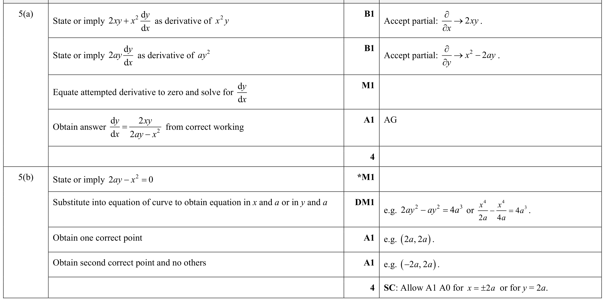
Paper 32summer23 Q7
Self-marked exam work is useful practice evidence, but it is weaker than checked Skill Check evidence. It does not award mastery by itself.
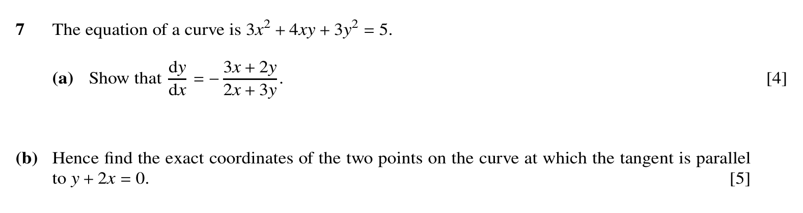
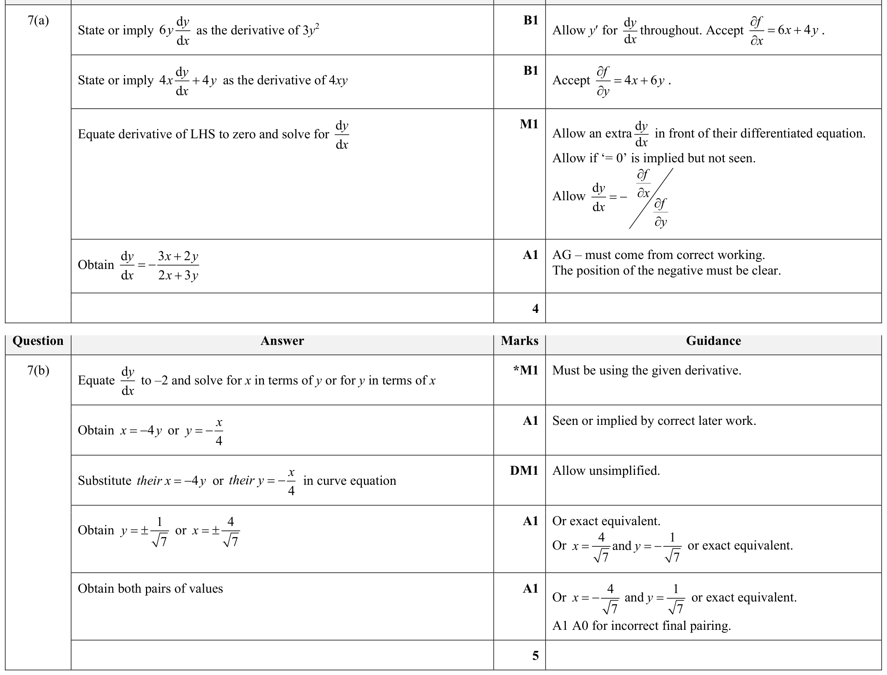
Paper 33summer23 Q4
Self-marked exam work is useful practice evidence, but it is weaker than checked Skill Check evidence. It does not award mastery by itself.
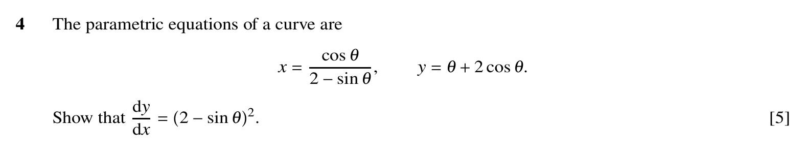
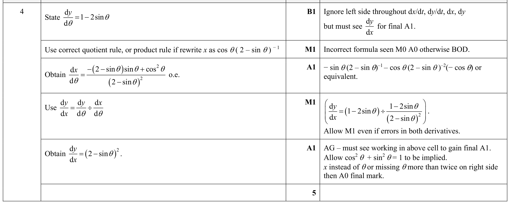
Paper 31autumn23 Q1
Self-marked exam work is useful practice evidence, but it is weaker than checked Skill Check evidence. It does not award mastery by itself.


Paper 31autumn23 Q6
Self-marked exam work is useful practice evidence, but it is weaker than checked Skill Check evidence. It does not award mastery by itself.


Paper 32autumn23 Q2
Self-marked exam work is useful practice evidence, but it is weaker than checked Skill Check evidence. It does not award mastery by itself.
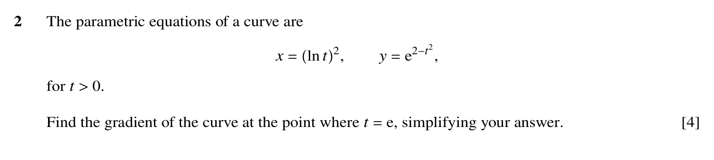
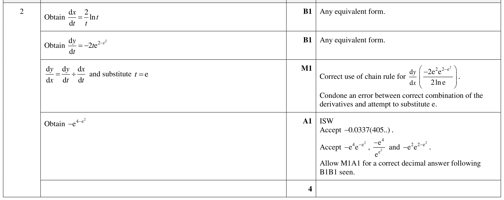
Paper 33autumn23 Q5
Self-marked exam work is useful practice evidence, but it is weaker than checked Skill Check evidence. It does not award mastery by itself.
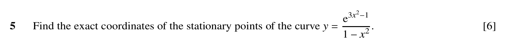
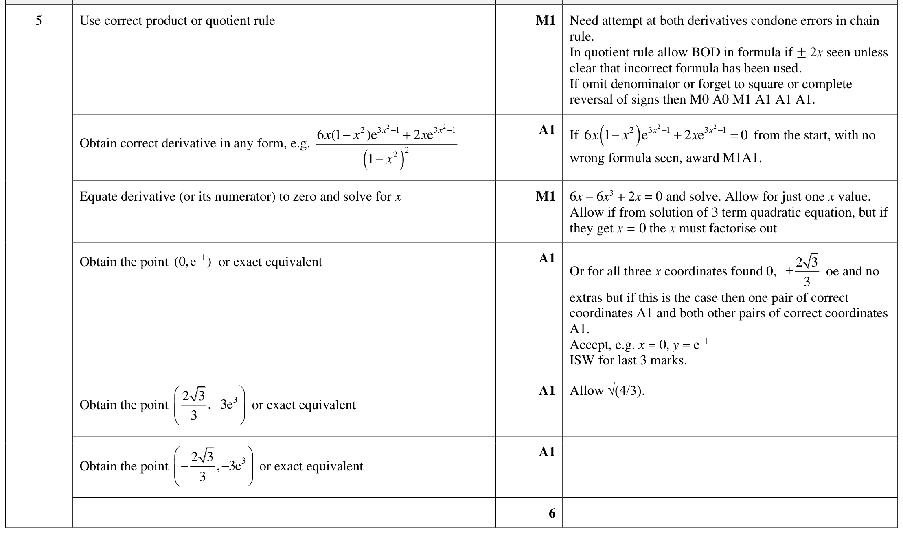